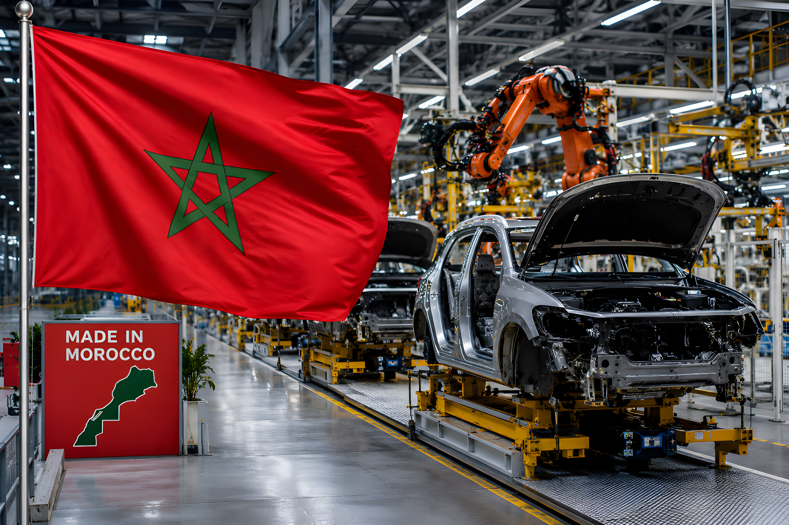

Pour la première fois depuis le lancement de l'Indice d'industrialisation de l'Afrique en 2010, le Maroc dépasse l'Afrique du Sud et s'impose comme la première économie industrielle du continent. Ce basculement, consacré par la Banque africaine de développement dans son rapport AII 2025 présenté à Brazzaville fin mai 2026, n'est pas le fruit d'une conjoncture favorable mais d'une stratégie industrielle construite sur vingt ans : automobile, aéronautique, phosphates, logistique. Derrière le chiffre se dessine un modèle — et ses tensions.
Le rapport Africa Industrialisation Index (AII) 2025, présenté par la Banque africaine de développement en marge de ses Assemblées annuelles à Brazzaville le 29 mai 2026, couvre 54 pays africains sur la période 2010–2024. Pour la première fois depuis l'existence de cet indice, le Maroc en prend la tête avec un score de 0,8415, contre 0,8396 pour l'Afrique du Sud, 0,7827 pour l'Égypte et 0,7760 pour la Tunisie. L'Afrique du Sud avait occupé cette première place sans discontinuer depuis 2010.
L'AII ne mesure pas uniquement le volume de production manufacturière. Il agrège des indicateurs de performance industrielle avec des déterminants structurels : qualité des infrastructures, niveau des compétences, accès au financement, environnement des affaires, gouvernance économique. Autrement dit, le Maroc ne ressort pas seulement comme un pays qui produit davantage — il apparaît comme une économie dont l'appareil productif, les chaînes d'exportation et les conditions d'implantation industrielle se sont progressivement consolidés sur une génération.
Le secteur automobile est devenu, en l'espace d'une décennie, le premier poste d'exportation du Maroc. L'usine Renault de Tanger, inaugurée en 2012, et l'usine Stellantis (ex-PSA) de Kénitra, ouverte en 2019, ont structuré un écosystème de sous-traitance qui emploie des dizaines de milliers de personnes. En 2024, le secteur automobile a généré 92,7 milliards de dirhams d'exportations, en hausse de 8,5 % sur un an, maintenant sa place de premier secteur exportateur national. Plus de 600 000 véhicules ont transité par Tanger Med en 2024, dont 68 % issus des complexes Renault et 27 % des usines Stellantis.
Moins visible que l'automobile, la filière aéronautique marocaine est pourtant l'une des plus dynamiques du continent. En 2024, les exportations aéronautiques ont atteint 26 milliards de dirhams, portées par une croissance de 16,5 % au premier semestre. En 2025, elles ont encore progressé de 10 % pour dépasser 29 milliards de dirhams. Le Maroc assemble des sous-ensembles de fuselage, fabrique des câblages et des systèmes d'interconnexion électrique pour Airbus, Boeing, Safran et Bombardier, entre autres. Abdelmalek Alaoui, président de l'Institut marocain d'intelligence stratégique, l'a formulé sans détour : chaque avion assemblé depuis les années 2000 contient au moins une composante essentielle fabriquée au Maroc.
Le Maroc détient environ 70 % des réserves mondiales de roche phosphatée, soit près de 50 milliards de tonnes selon les estimations du World Population Review 2024. Aucun autre pays n'approche cette concentration : l'Égypte, deuxième mondial, n'en possède que 2,8 milliards de tonnes. Cette position confère à l'Office chérifien des phosphates (OCP) un rôle structurant dans la sécurité alimentaire mondiale — le phosphore est l'un des trois nutriments irremplaçables de la fertilisation agricole.
En 2025, les exportations de phosphates et dérivés de l'OCP ont atteint un record absolu à 100 milliards de dirhams, en hausse de 14,6 % par rapport à 2024. Cette performance reflète à la fois la demande mondiale soutenue pour les engrais et la stratégie de montée en gamme de l'OCP, qui transforme désormais une large part de sa roche phosphatée en acide phosphorique et en engrais avant exportation — une valeur ajoutée bien supérieure à la simple extraction minière.
Le port de Tanger Med a franchi en 2024 la barre symbolique des 10 millions de conteneurs EVP traités (10,24 millions exactement), une hausse de 18,8 % sur un an — l'une des progressions les plus fortes du top 30 mondial. Il se classe désormais 17e mondial et 1er d'Afrique, selon le classement Alphaliner 2024, devançant Hambourg et surpassant la somme du trafic des ports espagnols de Valence et d'Algésiras réunis. Connecté à 180 ports dans 70 pays, Tanger Med assure également plus de 40 % du trafic de transbordement à destination du continent africain.
| Secteur | Exportations 2024 | Évolution | Rang |
|---|---|---|---|
| Automobile | ~120 MMDH (annuel) | +8,5 % | 1er secteur export. |
| Phosphates & dérivés | 86,76 MMDH | +13,1 % | 2e secteur export. |
| Aéronautique | ~26 MMDH | +16,5 % (S1) | Meilleure perf. |
| Câblage électrique | ~27 MMDH | +8,3 % | 4e secteur export. |
Lancement du plan Émergence, première politique industrielle structurée du Maroc. Identification de six métiers mondiaux prioritaires : automobile, aéronautique, électronique, offshoring, textile et agroalimentaire. Création de la première zone franche dédiée à Tanger.
Inauguration de l'usine Renault de Tanger, première grande implantation automobile en Afrique hors Afrique du Sud. Capacité initiale de 170 000 véhicules par an, étendue à 400 000. Tanger Med 1 atteint sa pleine capacité.
Plan d'accélération industrielle (PAI) 2014–2020. Objectif : porter la part de l'industrie dans le PIB de 14 % à 23 %. Création de zones industrielles intégrées (P2I). Inauguration de Tanger Med 2, portant la capacité totale à 9 millions d'EVP.
Ouverture de l'usine Stellantis (PSA) à Kénitra, deuxième grand constructeur automobile présent au Maroc. Capacité de 200 000 véhicules par an. Le Maroc dispose désormais de deux écosystèmes automobiles structurés autour de Tanger et de Kénitra-Rabat.
Tanger Med franchit les 10 millions d'EVP, 17e port mondial. Exportations totales de biens à 454 MMDH (+5,8 %). PIB en croissance de 3,8 %. Premiers investissements annoncés dans les batteries lithium-ion (groupe chinois Gotion, site de Kénitra).
La BAD publie l'AII 2025 à Brazzaville : le Maroc prend la première place du classement de l'industrialisation africaine pour la première fois depuis la création de l'indice. Score de 0,8415, devant l'Afrique du Sud (0,8396).
« Chaque avion dans le ciel aujourd'hui, assemblé après les années 2005, a au moins une composante essentielle produite au Maroc. »
— Abdelmalek Alaoui, président de l'Institut marocain d'intelligence stratégique, 2026Le classement de la BAD consacre une trajectoire cohérente et vérifiable : le Maroc a construit, sur vingt ans, un appareil industriel diversifié, exportateur et intégré aux chaînes de valeur mondiales. Le dépassement de l'Afrique du Sud n'est pas conjoncturel — c'est le croisement de deux dynamiques opposées, l'une en repli sous le poids de l'insécurité électrique et du désinvestissement, l'autre en montée régulière. Pour autant, le Maroc reste un pays dont le taux de chômage dépasse 12 %, dont la valeur ajoutée manufacturière par habitant reste modeste, et dont la croissance industrielle n'a pas encore produit de transformation sociale suffisante. Le premier rang africain est une étape, pas une destination. Il pose la question de savoir quelle industrie, pour qui, et à quelle vitesse.